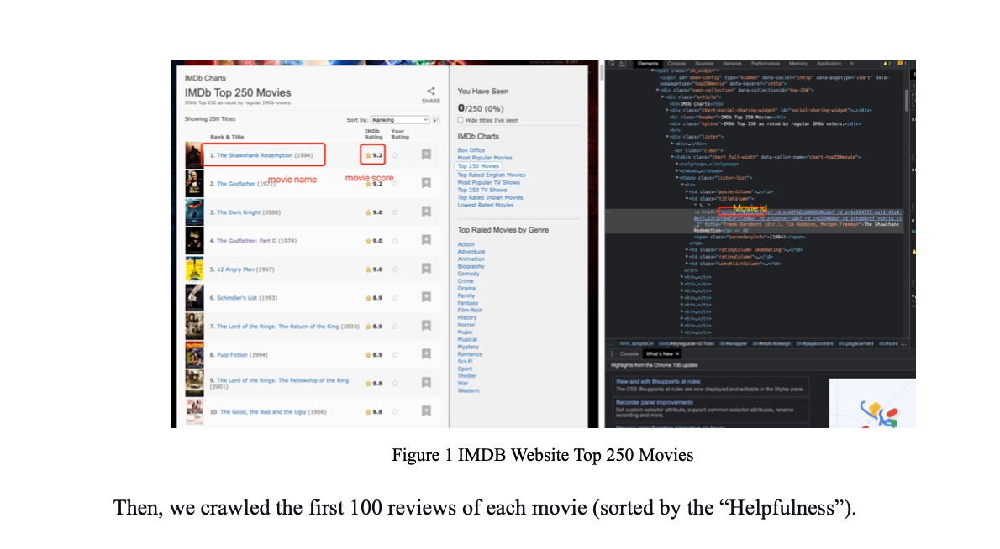
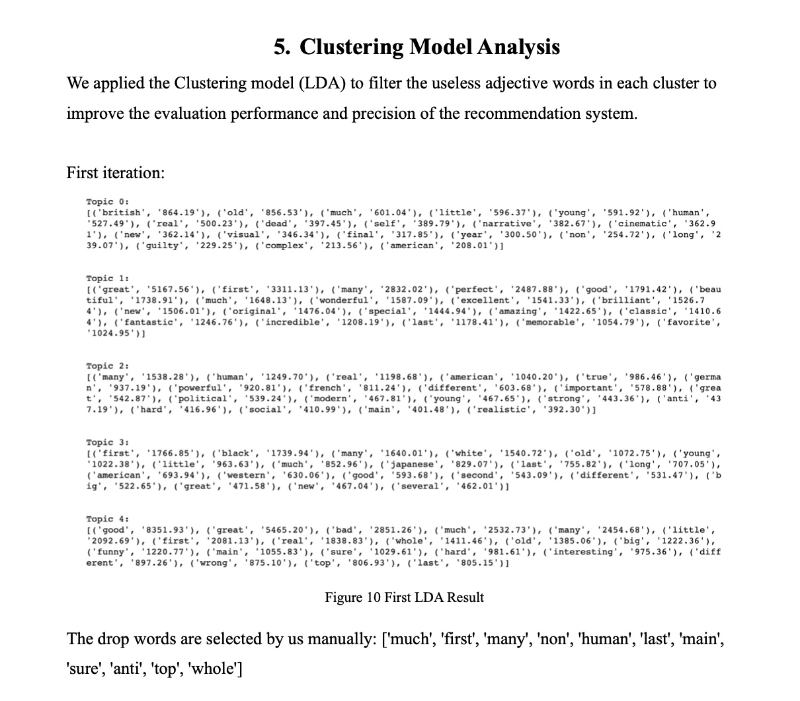
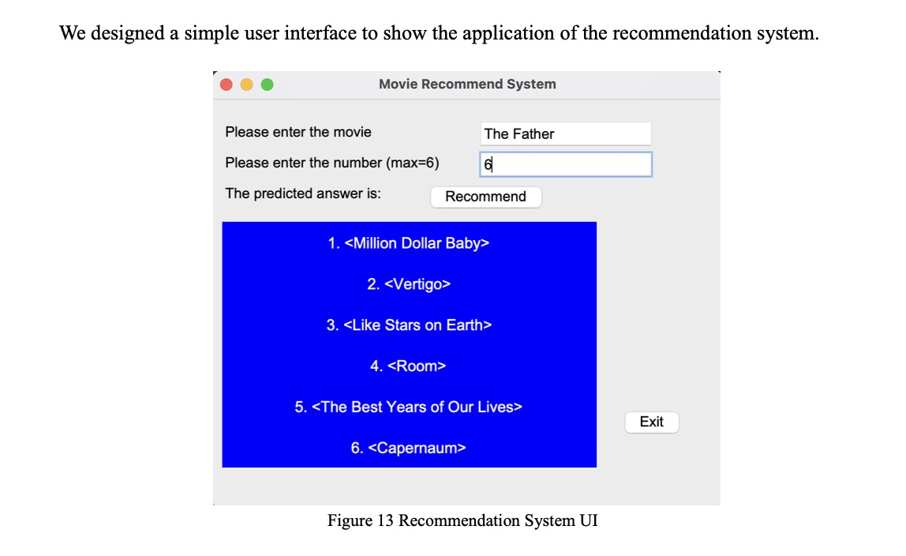
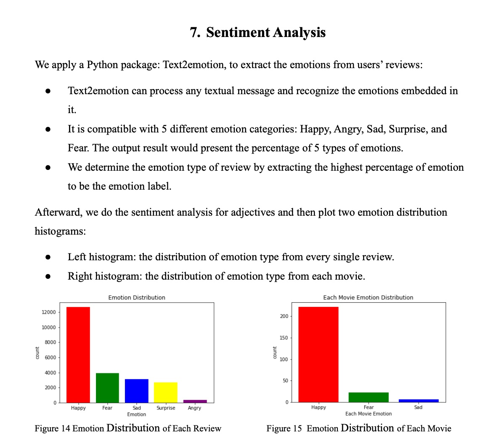
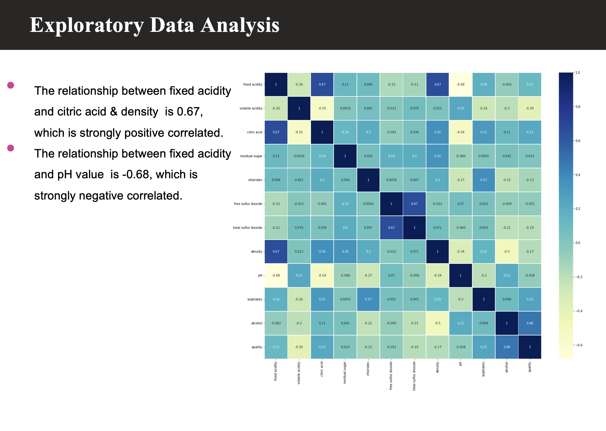
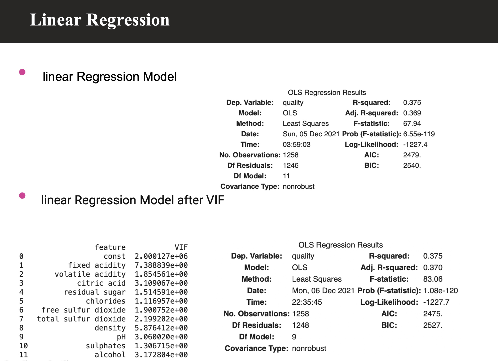
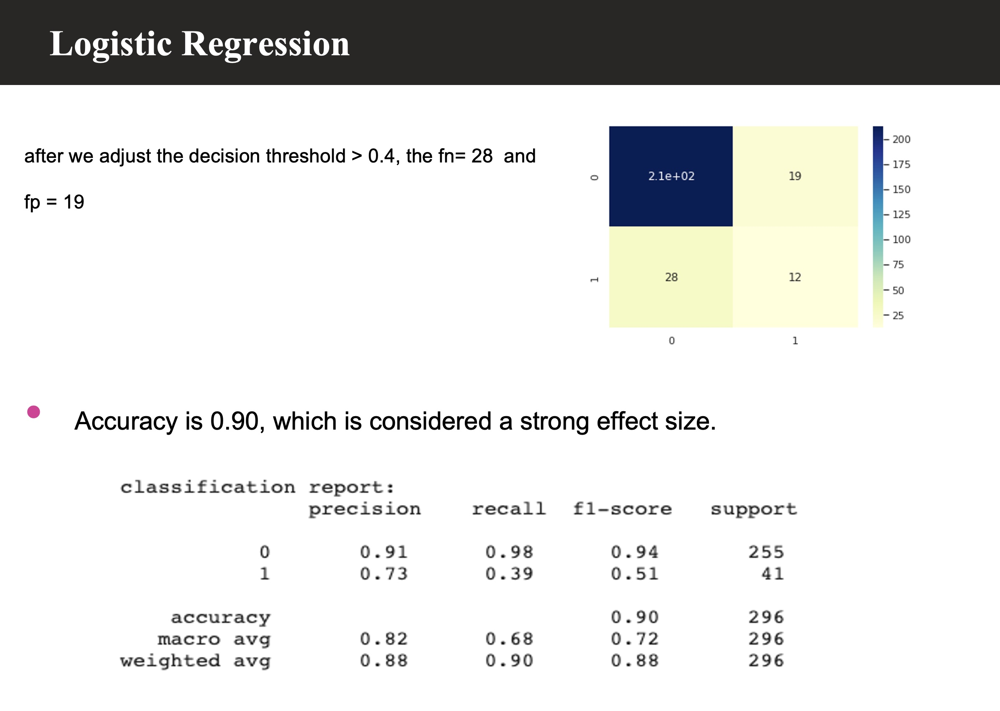

Haochen Wang
Student in Stevens Institute of Technology
Major: Business Intelligence & Analytics
Introduction
My name is Haochen Wang, a Master student in BIA program. My career orientation is to be a Data Analyst or Data Scientist. In my leisure time, I usually hang out with my friends, do exercise and watch sports game. My interest is traveling and experiencing different things.
My Skills
Python
Database
Machine Learning Algorithm & Statistics Knowledge
Python
利用各種 package 做資料分析(pandas, numpy, sklearn) Juypter Notebook 和 colab 使用 使用NLP & Web mining 技術Database
使用SQL進行資料查詢，更新和刪除以及基料庫模式的建立和修改 使用excel的各項基本功能，簡單的資料清洗Machine Learning Algorithm & Statistics Knowledge
Machine Learning Algorithm的基本原理( E.g. classification and clustering model) Statistics background knowledge(E.g. Linear regression, Bayes' theorem, Probability)My Acedamic Projects
1. Made movie recommendation based on post-viewing review




2. Evaluated red wine quality by used multiple regression and logistic regression:


